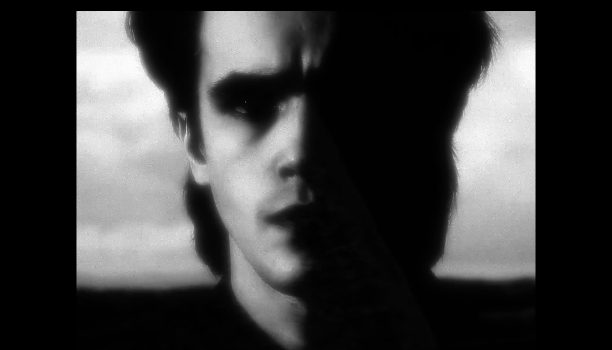

Osculo d’Amore
Performance che indaga il contatto tra anima e divino attraverso un linguaggio mistico, visivo e sonoro.
Osculo d’amore nasce da Il Libro d’Ore di Rainer Maria Rilke e dal tema del contatto tra l’Anima e Dio. L’espressione “Osculum amoris” rinvia a un bacio dell’amore, un gesto intimo e puro, lontano da ogni dimensione carnale: un incontro spirituale, pudico e radicale.
Il progetto ricerca la trama di quella presenza divina che si può trovare nella miseria, nella terra, nella vita quotidiana e nelle sue ferite. In Rilke, il divino non è né dogmatico né colpevolizzante: è un Dio popolare, personale, esile e concreto, che attraversa il mondo e la materia con una tensione mistica continua.
Scenicamente, lo spettacolo sarà strutturato in tre ambienti, come tre stanze interiori, ispirate ai tre libri del Libro d’Ore: la vita monastica, il pellegrinaggio, la povertà e la morte. Ogni parte sarà stilisticamente diversa, come una successione di tempi, luoghi e identità percettive che vogliono descrivere un castello interiore, fatto di verticalità, attese, silenzi e aperture sul sacro.

In questo lavoro il suono e l’immagine cercano di mettere in scena una “mistica attesa”: un percorso tra delicatezza, umiltà e povertà, costruito come esperienza viva di ascolto, silenzio e resa del reale. Il linguaggio visivo e cinematografico si appoggia a una dimensione generativa, in cui il video-arte e l’immagine diventano strumenti per decostruire il tempo e per tessere una cariatide di luoghi e sensazioni.
L’obiettivo è una ricerca sul sacro come esperienza dell’inconoscibile, non come dogma: qualcosa che non può essere posseduto, ma solo attraversato, cercato e accolto attraverso la povertà, la solitudine e la grazia.
Anno
2026
Formato
Spettacolo teatrale / video-arte / performance
Temi
Amore, mistica, povertà, silenzio, divino